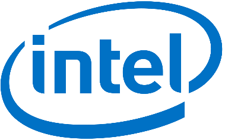
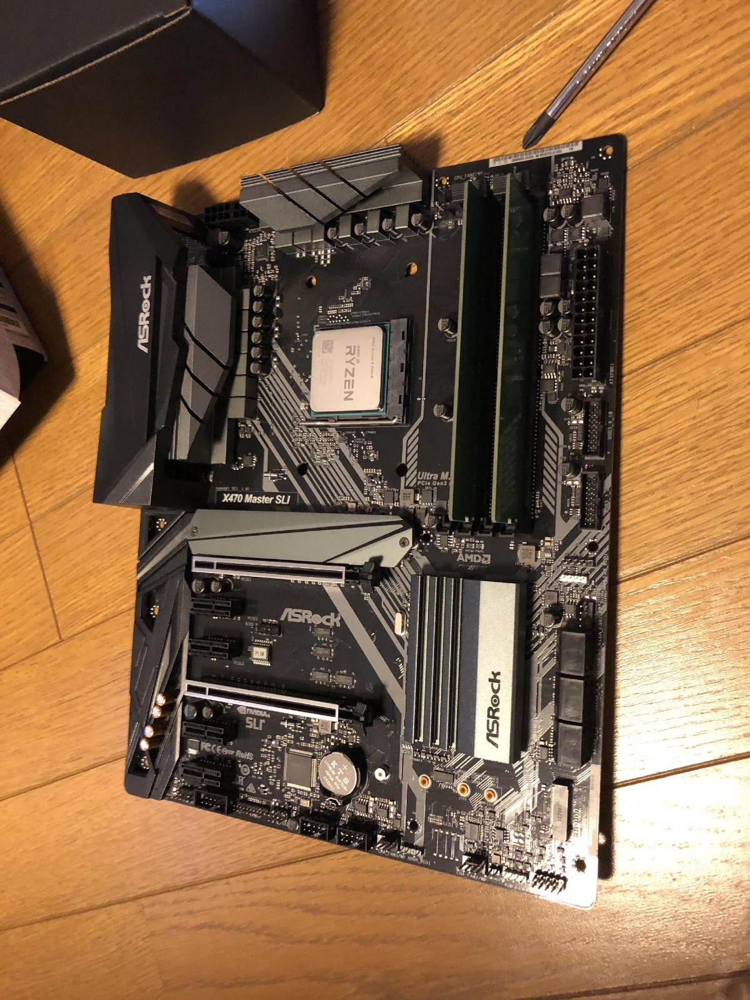
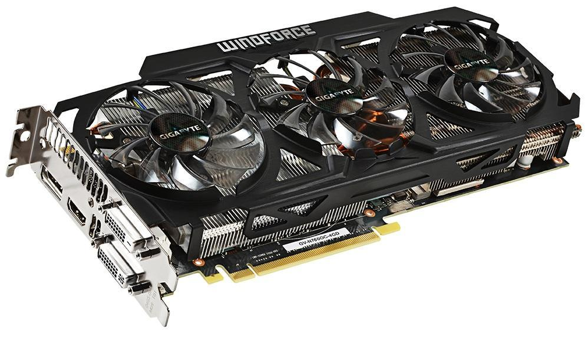
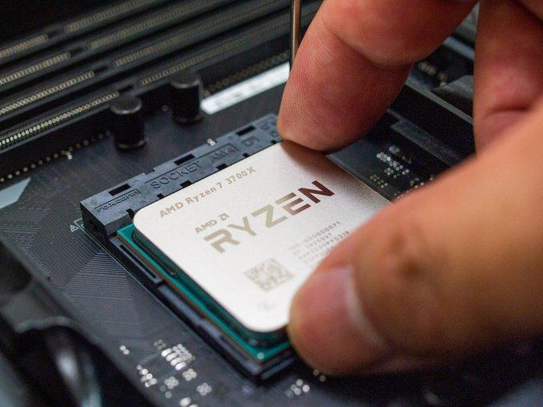

自作PCについていろいろ
Tweetそもそも自作PCとは
自作PCとは文字通り、自分で作る (組み立てる)PCのことです。よく勘違いしている方がいるのですが、はんだ付けなどの難しい電子工作は一切ありません。自作PCの利点はメーカー製PCにない構成が組めることです。具体的にはRyzen系CPUを搭載したPCはメーカー製ではまだ少ないです。またゲームや画像編集に必須なグラフィクカードを搭載したPCもメーカー製には少ないです。対して欠点は故障した場合PC全体としての保証がないため原因を特定してパーツ単位の保証を受ける必要があることです。この作業はPCに対しての知識が求められ初心者には向いていないと言われる要因の一つです。
パーツを選ぼう
PCを組むときはまずパーツ選びから始めます。この作業が組み立ての何十倍も重要です。
-
この先専門用語が増えますが、このようにお考えください。
- コア→おっさんの数
- スレッド→ペンの数
- 周波数→ペンを動かす速さ
- ターボブースト→おっさん残業時脳での速さ
- ストレージ→引き出し
- メモリ→机の大きさ
- グラボ→色鉛筆
- OS→おっさんの話す言語
- 水冷式のPC→おっさんを無限に残業させることができる無敵アイテム
- マザーボード→おっさんたちの職場
CPU
前述の通り、CPUはPCの脳と表現されます。そのためCPUの性能はPC全体の性能にかかわっていきます。一般PC向けにCPUを製造しているメーカーは基本的にアメリカのIntelとAMDの二社だけです。皆さんの使っているPCの多くはIntel製CPUだと思います。ノートパソコンを使用している方はキーボードの右下あたりをご覧ください。
このようなロゴマークの入ったシールが貼られている場合、それはIntel製CPUを搭載しています。
Intel製CPUと、AMD製CPUを比較するとこのようになります。もちろん製品によって差はありますが、メーカーの一般的な特徴としてお考え下さい。
メーカー |
Intel |
AMD |
コア数 |
普通 |
多い |
周波数 |
高い |
Zen2以前は低かった |
価格 |
高い(供給不足) |
安い |
ソフトの最適化具合 |
基本的にIntelが標準 |
|
マザーボード
マザーボードに色々なパーツを取り付けることで、各パーツが連携してPC全体が動作します。ここがPCの土台となる場所です。
自作市場のマザーボードは、基本的に台湾メーカーが独占しています。ここでは有名なメーカーをいくつか解説していこうと思います。
-
ASUS
マザーボード界の重鎮で、BIOSやドライバー系で使いやすいことが有名でシェア率が世界一です。
-
ASRock
元ASUS子会社で、マザーボード会の変態(褒め言葉)として有名です。また超高耐久なことでも有名です。
-
MSI
PCゲーマー向けのマザーボードを多く製造しているメーカーです。オーバークロック(CPUなどの性能をブーストさせること)をするときに向いています。
-
GIGABYTE
ファンコントロールなどのソフトウェアが強く、RGBのフルカラーで光る、かっこいいPCを組むとき向いています。
グラフィックボード
グラフィックボード(通称グラボ)は映像処理を担当するパーツです。「グラボのメーカー」という言葉には二つの意味があります。実際にグラフィック処理を担当するチップを製造する企業と、チップやファンを実装したボードとして販売する企業です。チップはNVIDIAやAMDが、ボードは先程紹介したマザボメーカーなどが製造していることが多いです。
組み立て
ここではPCの組み立てについて書きたいと思います。
CPUの取り付け
CPUの取り付け方法はIntelとAMDで方法が違います。
-
Intelの場合
CPUソケットのロックを外す。
右側のレバーをとる。
奥まで押せばカバーが開く。
CPUソケットを至近距離から目視して、「ピン折れ」が無いかチェック。あった場合は初期不良のため、すぐ交換返品を依頼する。
CPUを「ソッ」と置く。
ロックを閉じ、カバーを外してCPUの取り付けは完了。
-
AMDの場合
ロックを外す。
CPU本体の左下にある三角形の印と、CPUソケットの三角形の印をあわせて向きを揃え、「ポトッ」と置く感じで取り付ける。
これでCPUの取り付けは完了です。
メモリの取り付け
メモリはCPUソケットのそばにあるメモリスロットに押し込むと装着できます。

ケースへの取り付け
ケースへの取り付けはCPUクーラーの取り付けを行ってからにしましょう。
スペンサーをケースに取り付ける。
スペンサーとマザーボードの穴を合わせる。
ねじ止めする。
これでCPUクーラーの取付は終わりです。
グラボの取り付け
取り付けの前に電源の取り付けをしてください。
ケースのスロットをあらかじめ開けておく。
PCIEスロットにグラボを挿す。
ケースにネジで固定する。
後書きのようなもの
現在日本の自作PC市場は縮小の一途をたどっています。それに対して、どうにかこれを防ぎたいとこの部誌を書きました。見づらい文章でしたが、最後まで読んでいただきありがとうございました。
参考文献
https://chimolog.co/bto-selfmade-ryzen-pc/
https://ja.wikipedia.org/wiki/%E8%87%AA%E4%BD%9C%E3%83%91%E3%82%BD%E3%82%B3%E3%83%B3
https://twitter.com/jeministars/status/1083442975235989504
https://twitter.com/WesternDigiJPN/status/1148149352986136576
https://twitter.com/WesternDigiJPN/status/1151303495229644800